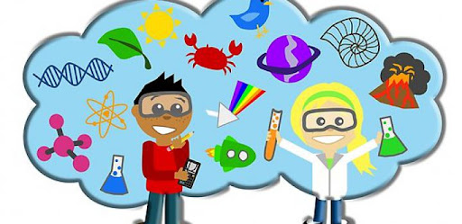

Temas de aprendizaje

Temas de aprendizaje
Historia de Colombia

Recorrido por la historia de la Independencia de Colombia 25 Marzo 2020 Vamos a recorrer juntos la historia de la Independencia de Colombia. ¿Te ha pasado que no encuentras cómo contar la historia de la Independencia de Colombia para niños? ¡Llegaste al lugar correcto! En Mi Señal preparamos este recorrido por la historia para conocer personajes no tan famosos del 20 de julio de 1810, saber el papel de las mujeres en la independencia (más allá de Policarpa Salavarrieta), reconocer el niño que fue héroe en la Batalla de Boyacá, y ¡hasta ponerse a prueba con un test del Profesor Súper O Histórico!
Fuente de informaciónMatemáticas

En este espacio, los niños aprenderán a través del juego conceptos matemáticos como el reconocimiento de los números y su asociación con las cantidades, formas geométricas, patrones y secuencias, así como sumas y restas. Próximamente estaremos publicando juegos de matemáticas para el aprendizaje de la división.
Fuente de informaciónCiencia
Los niños son curiosos por naturaleza. La ciencia alimenta esa curiosidad y les proporciona aprendizajes valiosos. A través de ella, los niños hacen observaciones, recopilan información, formulan preguntas y usan el pensamiento lógico para llegar a una conclusión. Te invitamos a conocer nuestras áreas educativas: en “Ciencia y tecnología”, los pequeños descubrirán la respuesta a interrogantes como ¿por qué huelen las flores? o ¿qué hace volar a los aviones? En el área de “Animales”, explorarán el reino animal a través de imágenes acompañadas de lecturas cortas y datos curiosos que de seguro motivarán a los niños a leer. ¿Tienes un pequeño científico en casa? Visita nuestros “Experimentos caseros” donde encontrarás actividades sencillas pero fascinantes, todas con soporte educativo y materiales que muy posiblemente tengas en casa. Con nuestras lecturas y actividades, ¡los niños no pararán de aprender!
Fuente de informaciónTecnología

La educación en ciencia y la tecnología es mucho más que simplemente unir dos conceptos o áreas académicas. Es una filosofía educativa que abarca las habilidades y los temas de enseñanza de una manera que se asemeja a la vida real y que tiene como misión promover en los niños la creatividad, colaboración, pensamiento crítico y comunicación. En nuestro portal, tenemos como objetivo cultivar en los niños el interés por los temas científico-tecnológicos. A través de nuestros artículos que incluyen imágenes, infografías y datos curiosos, así como libros ilustrados; los niños se sumergirán en el mundo de la ciencia y la tecnología.
Fuente de informacióningles

Bienvenidos a nuestra área de inglés para niños. En un mundo conectado por la tecnología, aprender inglés provee a los niños un futuro con oportunidades profesionales y sociales más amplias y una visión más profunda del mundo. Al hablar español podemos comunicarnos con aproximadamente 437 millones de personas, pero el inglés nos permite comunicarnos con 1.5 billones de personas. En Árbol ABC te invitamos a compartir nuestros juegos de inglés para niños con tus hijos o alumnos. ¡Aprender inglés será muy divertido!
Fuente de información